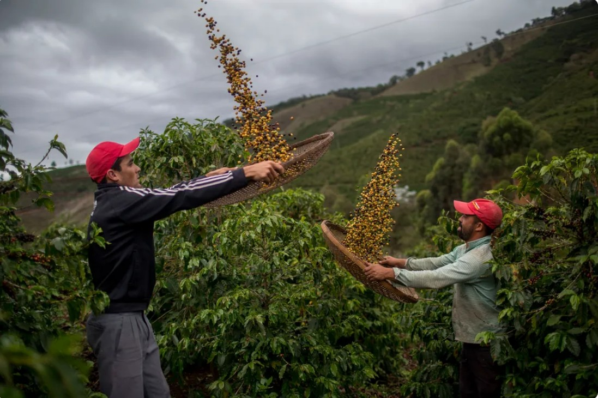
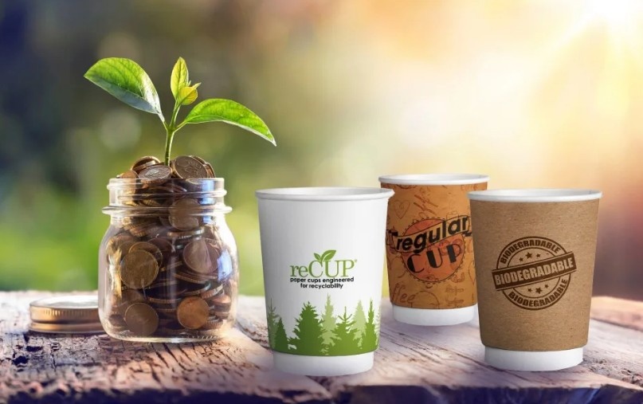
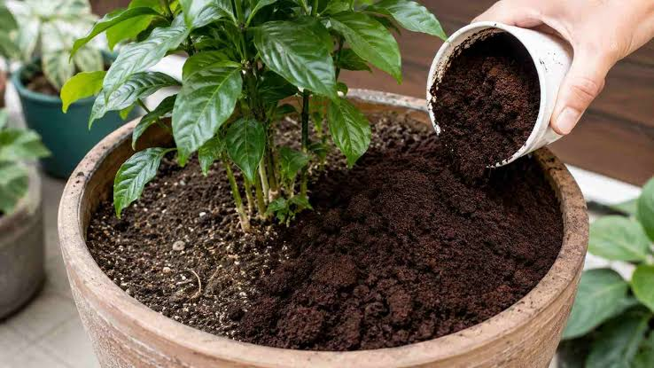

Como contribuímos ativamente para o meio ambiente e o consumo consciente.

Apoio a Pequenos Produtores
Negociamos diretamente com produtores parceiros da região, garantindo o desenvolvimento da economia local e o emprego de profissionais do nosso bairro. Oferecemos grãos de alta qualidade com rastreabilidade garantida por lei.

Redução de Resíduos
Adoção de embalagens 100% compostáveis — feitas a partir de fontes renováveis como a fibra de cana-de-açúcar e o amido de plantas — e incentivo ao uso de copos reutilizáveis, reduzindo a pegada plástica no nosso dia a dia.

Reciclagem e Compostagem
A borra de café gerada na nossa operação é destinada à compostagem orgânica, transformando resíduos em adubo rico em nitrogênio. Esse composto nutre e fortalece plantas cultivadas em hortas urbanas e espécies que amam solos levemente ácidos, como hortênsias, samambaias e roseiras.